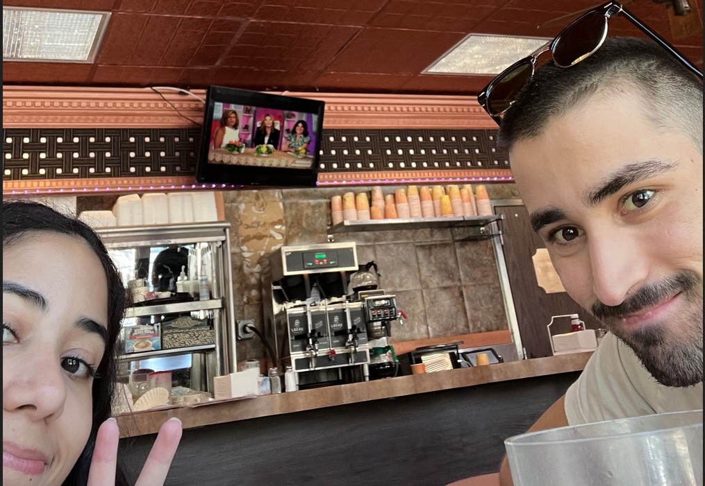

Giry pop HIIII. Well if i texted you super early to wake you
I am sorry. I also hope you're feeling better and if you need
anything just ask. So yes i gave you a mini note/letter yesterday
well because you're simpily the best. I feel like theres always
more to talk about. Like the way your face is in the photo, its
cute and funny. You're like just stunning. My friends like you and
think you're cool. My parents like you too like thats a first that
everyone likes somebody I know so it just reassures me that you're
just the fucking best. Oh yeah and I think you're cool too. You
help me get that happy chemcial in my braina nd I just smile. I
tell ya I was looking at photos to choose for this site and all
the ones I have of us or you or whatever it is they're just
giving, and your little smile, they way your head leans in or the
way the filter makes you look funny. Oh girly pop what I'm trying
to say is you're perfect and that I appreciate all the tiny things
you do for me that you may not even know you help with. You are my
number 1, you are the best girly pop ever, and I would give up
everything I have just to be friends with you and thats not a joke
Id legit give up everything for you. Or to help you. Im happy that
at the end of everything we're still friends and just want you to
know that I appreciate you and if I ever have to give a speech its
going to start off "I'd like to thank my girly pop for always
being supportive and just being my #1 supporter". Amy the girly
pop > Baian I dont have anythig new to add to the packet today as
I did not have time, I am sorry. Same thing with jobs I just
didn't have time. But I am working on writing code that will
search and email me jobs every day for you. I hope you have a
great pussy popping day and just know Im proud of you and I
support you and you're doing great!!!
Love your Girly Pop and Bestie,
Edwardo
